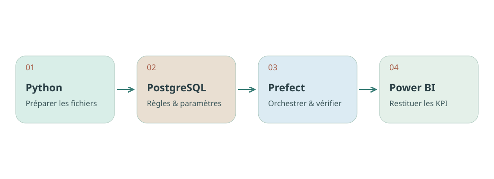

Schéma explicatif du périmètre décrit ; les environnements sont précisés dans l’étude.
Le besoin et ma contribution
Évaluer l’éligibilité à des avantages sportifs et leur coût dans un scénario RH. J’ai construit le flux de préparation et de chargement, les règles SQL, l’enrichissement des trajets et les restitutions.
Des données aux décisions
- Fichiers RH et sportifs nettoyés puis chargés dans PostgreSQL.
- Validation de distance via Google Routes, avec réutilisation des validations déjà obtenues.
- Paramètres métier stockés en table : taux de prime, seuil d’activités et jours bien-être.
- Prefect orchestre le flux, ses reprises et ses journaux ; les vues SQL alimentent Power BI.
- Une activité ajoutée en direct peut déclencher une notification Slack dans la démonstration.
Préserver les données lors du rejeu
Les activités sont identifiées comme simulated ou live. La régénération de l’historique supprime uniquement la simulation et conserve le live. Le calcul métier est séparé de l’ingestion pour modifier un taux sans réécrire le pipeline.
Validation et périmètre
95 salariés ont une pratique sportive renseignée. Les contrôles couvrent notamment unicité, références, dates, distances et cohérence des primes. Le coût calculé à partir du taux de 5 % est une sortie du scénario, pas une économie réalisée en entreprise.
Du POC à un service durable
La planification toutes les 24 heures dépend d’un service Prefect local en fonctionnement. Strava, un worker hébergé en continu et un réseau de production restent à mettre en place. Le live est une démonstration d’ajout et de notification, pas une infrastructure de streaming distribuée.
Code et éléments de preuve
Les extraits et résultats ci-dessous proviennent des livrables du projet, consultés le 16 novembre 2026. Les traitements n’ont pas été réexécutés pour cette présentation.